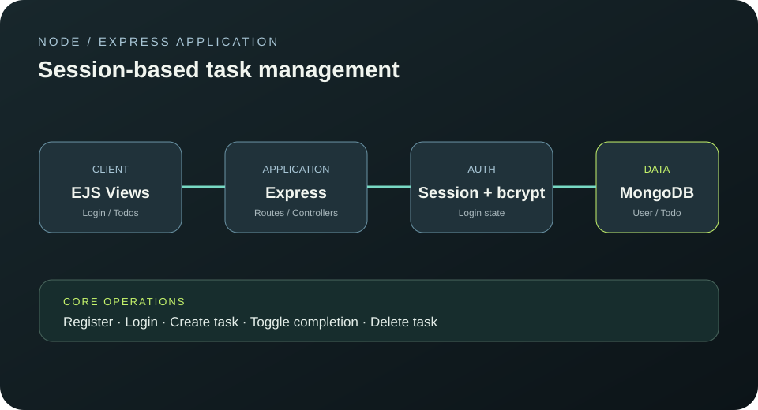

01 / OVERVIEW
A task app with accounts and sessions.
This Node.js application combines Express routes and controllers, EJS views, Mongoose models, MongoDB persistence, and express-session. Users can register, sign in, and manage task records associated with their account.
02 / AUTHENTICATION FLOW
Validated accounts, hashed passwords.
- Registration requires a username, email, password, and confirmation field.
- The controller checks required fields, compares the password and confirmation, and checks for an existing email.
- Passwords are hashed with bcrypt using a generated salt before the user record is saved.
- Login looks up the email and uses
bcrypt.compareto check the supplied password. - On successful login, the user ID is stored in the session and the browser is redirected to the task page.
03 / TASK OPERATIONS
Create, list, complete, and delete tasks.
The task model stores a title, user ID reference, completion flag, and creation timestamp. The task page loads records for the current session user. Create and delete operations include the session user ID in their database query, while the completion toggle currently looks up the task by its ID alone.
04 / APPLICATION STRUCTURE
Routes, controllers and models kept apart.

05 / CODE REVIEW NOTES
Security gaps written down, not hidden.
Task ownership on completion
The current toggle handler fetches a task by ID without also checking the session user ID. Add an ownership condition before using this in a multi-user deployment.
Session secret configuration
The server has a fallback session secret. Set a strong secret through the environment and remove the fallback before deployment.
Session storage
The current setup uses the default express-session store. A production deployment should use a persistent session store.
Automated tests
The package file does not currently define a working automated test suite.
06 / STACK & REPOSITORY
A practical backend learning project.
The project uses Node.js, Express 5, MongoDB with Mongoose, bcrypt, express-session, EJS, dotenv, and CORS. It is presented as a learning/prototype project, not as a security-audited production authentication service.